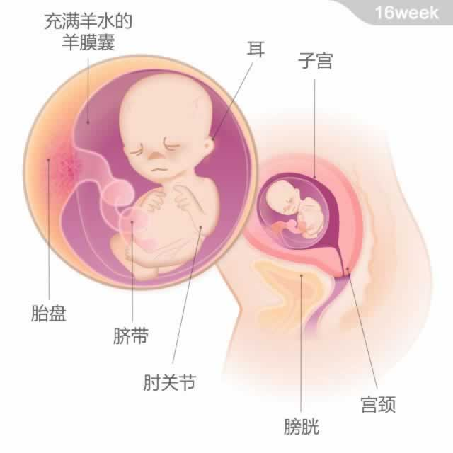

宝宝有一个洋葱大小，重约140克，从头部到臀部的长度为11~12厘米。
宝宝有一个洋葱大小，重约140克，从头部到臀部的长度为11~12厘米。
现在，宝宝的骨骼大部分还是类似橡胶般的软骨，这些软骨以后会越来越硬。渐渐变硬。事实上宝宝初生时身体骨骼和软骨的总数是300块，而随着他的成长，一些骨骼会融合到一起，长到成年时，只剩下206块了。
此时，宝宝的脂肪开始在皮下聚集，这可以起到给他保暖和提供能量的作用。他小小的心脏，每天都可以泵出约24升的血液。宝宝十分顽皮，喜欢用手拉、抓脐带，有时还会抓得很紧。不必担心，宝宝会掌握分寸，不让自己受伤的。